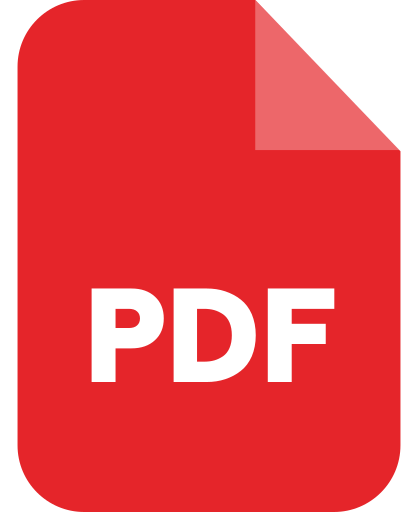

Literature
(First Semester)
1/ Outline of British Literary Periods

2/ British Romanticism
3/ Proverbs of Hell Full Text
4/ Analysis of Proverbs of Hell
5/ The Rime of The Ancient Mariner
6/ The Rime of the Ancient Mariner Context1
7/ Words and their meanings in ST Coleridge
8/ Major Themes in The Rime
9/ Symbolism and Literary Devices in the Rime
10/ The Tables Turned (Wiliam Wordsworth)
11/ Ozymandias (Percy Bysshe Shelley)
12/ Frankenstein
13/ Hard Times by Charles Dickens
14/ The Victorian Period
2/ British Romanticism
3/ Proverbs of Hell Full Text
4/ Analysis of Proverbs of Hell
5/ The Rime of The Ancient Mariner
6/ The Rime of the Ancient Mariner Context1
7/ Words and their meanings in ST Coleridge
8/ Major Themes in The Rime
9/ Symbolism and Literary Devices in the Rime
10/ The Tables Turned (Wiliam Wordsworth)
11/ Ozymandias (Percy Bysshe Shelley)
12/ Frankenstein
13/ Hard Times by Charles Dickens
14/ The Victorian Period